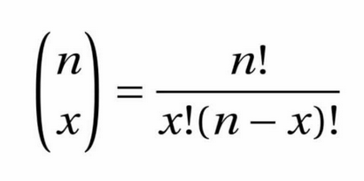

4.3 Normal Distribution and Testing
1 Normal Distributions
1.1 Coin Toss - 1
Toss a coin, and every time it gives head, mark the result as 0. When it gives the result tails (the one with the number), mark the result as 1. Toss is 10 times. Each person will have 10 numbers that are either 0 or 1.
Make a graph of the number of results, such as this one: What are the mean and standard deviation of this?
1.2 Coin Toss - 2
Take two coins, and toss them same as before, but sum their values now. Make 10 tosses of the 2 coins. That is, each person will have 10 numbers between 0 and 2. Make a graph of the number of results, such as this one:
What are the mean and standard deviation of this?
1.3 Coin Toss - 5
Each person in the class throws 5 coins and sum them, 5 times. That is, each person will have five numbers between 0 and 5. Make a graph, such as the following:
What are the mean and standard deviation of this?
1.4 What if we keep going?
We can keep doing that, for larger and larger numbers of coins. For each one of these, we will get a sample of the binomial distribution.
Its formula is the following:

1.5 Comparing to the binomial distribution
The mean of the distribution is n/2, and the standard deviation \sqrt{n}/2. Make a table with the sampled results and the ideal ones:
| Mean (Sample) | Mean (Ideal) | STD (Sample) | STD (Ideal) | |
|---|---|---|---|---|
| 1 | ||||
| 2 | ||||
| 5 |
1.6 What if we never stop?
In the limit of an infinite amount of coins, we will get a curve shape like the following:

This curve is called a normal distribution.
1.7 How can we see this?
We can superpose the graphs, and they will progressively get closer to each other.
1.8 Why is this important?
We saw examples of two important laws:
- The law of large numbers: if take the average of a large number of samples of a random event, we progressively approach the ideal value of the mean.
- The central limit theorem: if we take the sum of a large number of independent random variable, and sample it many times, the resulting distribution progressively approaches a normal distribution.
This last point shows why normal distributions are common in nature: observables that result from the added effect of multiple independent and similar effects will follow a normal distribution.
1.9 Brownian motion
Grains of pollen follow a seemingly random motion on water, due to the collisions with water molecules. The distribution of these movements is normal. Studying this led to Einstein’s Nobel prize.
1.10 Exercise
Let’s make a table in the classroom with the following numbers:
- Height in centimeters
- Shoe size
- Age in days
We will check whether these distributions are normal or not by doing histograms.
2 Comparing distributions
2.1 How can we compare distributions?
There are many ways to comparing distributions, including looking at histograms and thinking whether they look alike or not.
When we have two variables that follow a normal distribution, there are two tests that can give us a number telling us whether two distributions are similar or not.
2.2 Student t-test
The student test checks whether the mean of two normal distributions is the same.
2.3 How to do it?
The statistics is:
where:
where the s are the unbiased sample variances. Basically, we test how means are different measured in standard deviations.
2.4 F-test
The student test checks whether the standard deviation of two normal distributions is the same.
2.5 How to do it?
The statistics for distributions with the same mean is:
When they are the same, we expect them to be one.
2.6 Exercise
Let’s split the classroom in two, and take the statistics above: height, shoe size, age in days.
Apply the t-test and F-test to each and answer the following questions:
- Can we make a difference between the means?
- Does it make sense to apply the t-test here?
- Can we make a difference between the standard deviations?
- Does it make sense to apply the F-test here?
3 On the computer
3.1 Data analysis
A data set is availabe, together with its description: